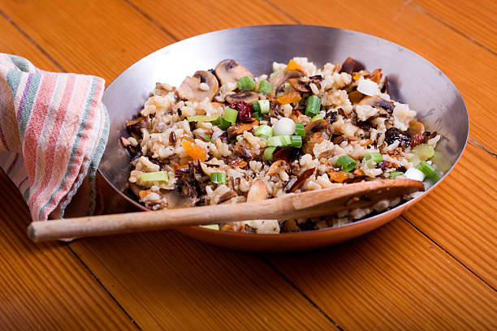

Pilau Recipe
Ingredients
- 2tablespoons unsalted butter, or ghee.
- 1 onion, finely diced.
- 1 clove garlic, finely diced.
- 5 cardamom pods.
- 1 to 2 whole cinnamon sticks.
- 1/2 teaspoon ground cumin.
- 1 teaspoon freshly ground black pepper.
- 1/2 teaspoon ground cloves.
- 2 cups basmati rice, rinsed to remove excess starch.
- 1 cup coconut milk.
- 2 cups vegetable stock, or boiling water.

Steps
- Gather the ingredients.
- In a heavy pot, heat the butter or ghee over medium heat and fry the onions until golden.
- Add the rice to the pot and stir until coated with the fat. Add the garlic and spices to the pot and and
stir, allowing the spices to release their fragrance (about a minute).
- Stir in the coconut milk and vegetable stock or water, and bring to a boil.
- After 5 minutes, reduce the heat to low, cover firmly with a lid and allow the rice to cook for 15 minutes.
- Fluff the rice and serve hot to accompany curries and stews.